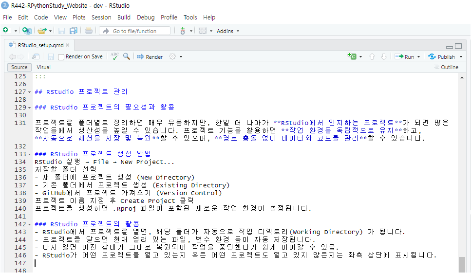

R version: example
[64-bit] C:\R\R-4.4.1RPythonStudyGroup feat. ChatGPT
2024년 5월 6일
2025년 3월 10일
RStudio와 VS Code는 모두 각자의 특징을 가진 R 프로그래밍을 위한(할수 있는) 통합 개발 환경(IDE)입니다. RStudio는 R 코딩에 전용화된 통합개발환경으로 R 언어와 관련된 다양한 기능을 직관적으로 제공하며, R 코드 작성, 데이터 시각화, 리포팅 등에 최적화되어 있습니다. 반면에 VS Code는 다양한 프로그래밍 언어를 지원하며, Marketplace에서 제공하는 확장 기능을 통해 개발자가 필요한 기능을 추가할 수 있는 유연성을 가지고 있습니다. VS Code는 경량화된 성능과 통합 터미널 기능을 제공하여 다양한 개발 환경에서 활용될 수 있지만, R에 특화된 기능은 상대적으로 부족할 수 있습니다.
연구회에서는 RStudio를 우선 추천합니다.
RStudio 공식사이트 (https://posit.co/)에 설치에 대한 공식문서는 없어 보입니다. 그러나 설치는 어렵지 않으며 아래의 요약을 참고하여 설치 하셔도 됩니다.
자신의 운영체제( (Windows 10+, macOS 13+, and Linux)에 맞는 최신버전의 RStudio를 아래의 공식 다운로드 사이트(https://posit.co/downloads/)에서 다운로드 후 (2024년 12월 16일 release된 원도우데스크탑용의 최신설치파일은 RStudio-2024.12.0+467.exe입니다.) 설치합니다.
C:\Program Files\RStudio RStudio의 실행 파일 및 주요 프로그램 파일이 저장되는 위치입니다. 프로그램 업데이트 시 이 폴더 내의 파일이 변경됩니다.C:\Users\사용자명\AppData\Local\RStudio 개별 사용자의 RStudio 설정을 저장합니다. UI 레이아웃, 최근 사용한 프로젝트, 마지막으로 연 코드 파일 등의 정보를 포함합니다.C:\Users\사용자명\AppData\Local\RStudio\log RStudio의 로그 파일이 저장되는 위치입니다. 이 폴더에는 RStudio의 실행 로그가 저장됩니다.C:\ProgramData\RStudio/
├── Applications # 애플리케이션 폴더
├── Library # 시스템 전역 라이브러리 및 설정
├── System # 운영체제 핵심 파일
├── Users # 사용자 계정 폴더
├── Volumes # 마운트된 외장 디스크 및 네트워크 드라이브
├── bin # 기본 명령어 실행 파일 (예: ls, cp, mv)
├── sbin # 관리자용 명령어 실행 파일 (예: shutdown, reboot)
├── etc # 시스템 설정 파일
├── dev # 장치 파일 (예: 디스크, USB, 터미널)
├── tmp # 임시 파일 저장 폴더
├── var # 로그 및 캐시 파일
├── usr # 추가 명령어 및 라이브러리
└── opt # 서드파티 소프트웨어 패키지 (예: Homebrew 설치 파일)/Applications/RStudio.app 일반적인 macOS 애플리케이션처럼 응용 프로그램 폴더 (/Applications) 에 설치됩니다. RStudio를 실행하려면 이 폴더 내의 RStudio.app을 실행하면 됩니다.~/Library/Application Support/RStudio 개별 사용자의 RStudio 설정을 저장합니다. UI 레이아웃, 최근 사용한 프로젝트, 마지막으로 연 코드 파일 등의 정보를 포함합니다.~/.config/rstudio RStudio의 설정 파일이 저장되는 위치입니다. 이 폴더에는 RStudio의 환경 변수 및 사용자 지정 설정이 저장됩니다.~/Library/Logs/RStudio RStudio의 로그 파일이 저장되는 위치입니다. 이 폴더에는 RStudio의 실행 로그가 저장됩니다. 5. 전역 설정 폴더 (모든 사용자 적용) /Library/Application Support/RStudio 모든 사용자에게 적용되는 RStudio 설정을 저장합니다. 이 폴더에는 RStudio의 전역 설정 파일이 저장됩니다.설치 이후 RStudio을 실행한 후 상단의 탭매뉴 중 Tools 메뉴 > Global Options… > R General > Basic 탭에서 아래의 예시와 같이 설치하신 최신버전의 R 실행경로를 선택해 주시면 됩니다. (드물게 지난 버전의 R의 만든 프로젝트를 지난 버전으로 실행하고 싶다면 이 메뉴에서 과거 버전의 R 실행파일의 경로를 지정해주시고 해당 프로젝트를 열어서 사용하시면 됩니다.)
Default working directory (when not in a project)지정은 아래의 예시와 같이 프로젝트를 관리하는 상위 폴더를 추천 드립니다.
RStudio 매뉴얼은 개발사인 posit이 만든 https://docs.posit.co/ide/user/을 참고하시길 바랍니다.
개발자들은 R을 command line interface로 사용하기 보다는 RStudio로 사용한다고 생각됩니다. 그러한 측면에서 R 사용법과 RStudio 사용법은 밀접하게 연계된 셈이며, 사용법에 대한 자료는 RStudio를 개발한 posit에서 만든 RSudio에 내장된 Tutorials가 있습니다. 링크를 타고들어가보면 Beginners, Intermediates, Experts 과정들이 있으므로 상황에 맞는 과정들을 선택해서 시작하면 좋습니다.
(RStudio에서는 아래의 그림 2 과 같이 git와 같은 version control interface 사용여부에 대한 설정이 있으며 이를 check 해야 새로운 프로젝트를 만들 때 git 사용여부가 옵션으로 선택이 가능해집니다. )
renv원래 R에서 패키지는 해당버전 R의 설치폴더 하부의 library 폴더에 설치됩니다. renv는 R 프로젝트에서 패키지 의존성을 관리하기 위해 설계된 도구로써, renv를 설치하고 활성화하면 해당 프로젝트 폴더 하부에 renv 폴더가 만들어지고, 그 하부에 패키지를 설치하게 됩니다. 또한 설치된 패키지들의 정보를 renv.lock 파일에 관리하게 됩니다. 이러한 방법으로 R에서는 프로젝트별로 패키지를 관리할 수 있으므로 필자를 이를 추천합니다.
RStudio에서 새로운 프로젝트를 생성할 때 renv 사용여부를 check하면 자동으로 설정됩니다.
사용법에 대해서는 https://rstudio.github.io/renv/articles/renv.html 참고하시길 바랍니다.
윈도우의 경우 Project 폴더를 C:\Projects 하위폴더에 R 버전과 프로젝트명을 폴더명으로 하여 관리하는 것을 추천합니다.
C:\Projects\
└─ Rxyz-Project_NameMacOS의 경우 Project 폴더를 /Users/사용자명/Projects 하위폴더에 R 버전과 프로젝트명을 폴더명으로 하여 관리하는 것을 추천합니다.
/Users/사용자명/Projects/
└─ Rxyz-Project_Name프로젝트를 폴더별로 정리하면 매우 유용하지만, 한발 더 나아가 RStudio에서 인지하는 프로젝트가 되면 많은 작업들에서 생산성을 높일 수 있습니다. 프로젝트 기능을 활용하면 작업 환경을 독립적으로 유지하고, 자동으로 세션을 저장 및 복원할 수 있으며, 경로 충돌 없이 데이터와 코드를 관리할 수 있습니다.
RStudio 실행 → File → New Project…
저장할 폴더 선택
- 새 폴더에 프로젝트 생성 (New Directory) - 기존 폴더에서 프로젝트 생성 (Existing Directory) - GitHub에서 프로젝트 가져오기 (Version Control)
프로젝트 이름 지정 후 Create Project 클릭
프로젝트를 생성하면 .Rproj 파일이 포함된 새로운 작업 환경이 설정됩니다.
R442-RPythonStudy_Website - dev - RStudio라고 표시되어 있으며 dev는 Git 버전관리시스템에서 사용할 목적으로 작성자가 부여한 branch 이름입니다.)